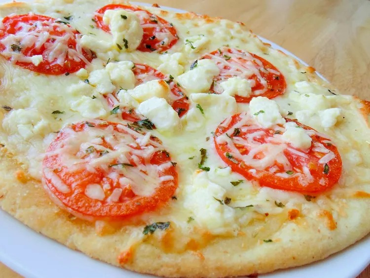

Four Cheese Margherita Pizza

Description
This is a delicious four cheese margherita pizza with a crispy crust and melted cheese.
Why You'll Love It
- Four cheeses, Roma tomatoes, and basil layer over pre-baked crusts for a tangy, nutty, tasty meal.
- Reviewers appreciate the easy steps, helping beginner cooks create a successful pizza like a pro.
Ingredients
- 1 pre-baked pizza crust
- 1 cup mozzarella cheese, shredded
- 1 cup provolone cheese, shredded
- 1 cup gouda cheese, shredded
- 1 cup parmesan cheese, grated
- 1 cup Roma tomatoes, sliced
- 1/4 cup fresh basil leaves
Instructions
- Preheat the oven to 475°F (245°C).
- Place the pre-baked pizza crust on a baking sheet.
- Sprinkle the mozzarella cheese evenly over the crust.
- Layer the provolone, gouda, and parmesan cheeses on top.
- Arrange the sliced Roma tomatoes over the cheese layer.
- Gently tear the fresh basil leaves and sprinkle them over the tomatoes.
- Bake for 12-15 minutes, or until the cheese is bubbly and golden brown.
Back to Home